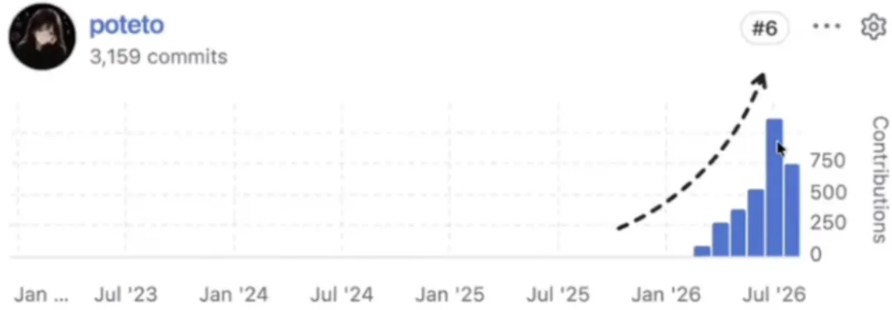
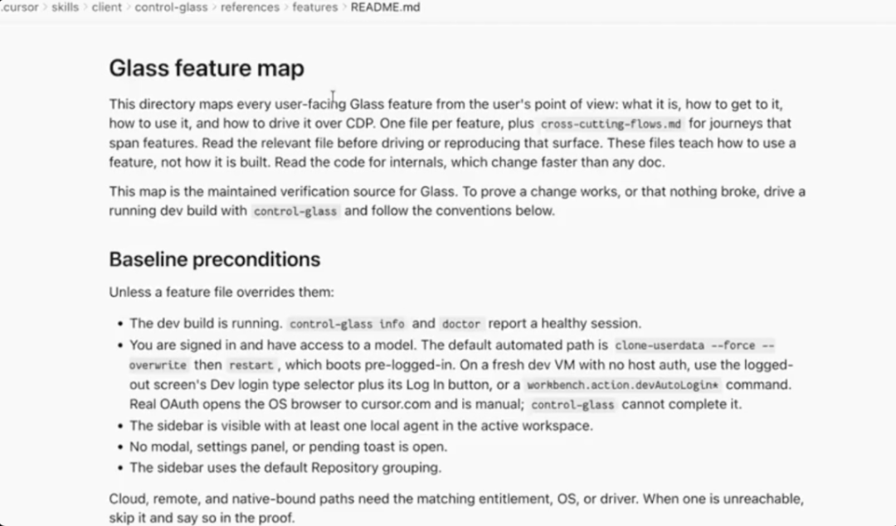

新智元报道
新智元报道

同时跑20多个智能体，上个月交付1000多个PR，8月的目标是翻倍。
这位GrokBot工程师拉出GitHub贡献曲线：五个月，3000多个PR。

提PR、跑验证、合进主干，整个链条智能体自己跑完，中间不用她过手。
用她的话说：一觉醒来，20个PR已经躺在主干分支上了。而且翻了一遍，写得还不错。
她也知道，这话听着有点让人怀疑这些代码的质量，紧跟着补了一句：
这么说显得我像个批量制造垃圾代码的人，我保证我不是。
她的做法，是同时跑20多个GrokBot，装在她自己开源的pstack里，配合/loop、/goal和/swarm，让智能体完整地拥有一个任务，自己干，自己验，自己交。
这位工程师叫Lauren Tan。
她是前Cursor工程师，此前待过Meta和Netflix，在Netflix当过两年工程经理，现在负责SpaceXAI的GrokBot。
Lauren Tan在GrokBot团队工作坊上分享。
AI写代码已经不稀奇。
真正让人好奇的，一个人一个月提交1000多个PR，马上就要直奔2000个，而且没把代码库变成一堆垃圾。
她是怎么做到的？

Lauren分享了一张曲线图，她说这不是什么科学图表，是她这五个月的心路。
Lauren Tan分享的信任曲线。纵轴是信任，横轴是能同时开的智能体数量，从1到成千上万。
一年前，几乎没什么人用智能体写代码。
那时候的模式是，你时刻盯着一个智能体，或者几个，眼睛不离屏幕，每一行输出都要看，坐在那儿一句一句提示。
这一切没办法并行，因为你不信它。
你连一个智能体的输出都不信任，怎么可能同时开一百个。
每个用过智能体的人，都尝过信任崩塌的滋味。
有一次她报了个bug，问智能体这功能为什么不工作。
智能体一口咬定，肯定是这儿的问题。她翻开工具调用记录一看，它压根没读那段本该相关的代码。
几次之后，她想明白一件事：智能体在猜，而且它不知道自己在猜。
对这样的下属，你还敢放权吗？
Lauren打了个比方。
你是工程经理，手下带着一队工程师，你不信任他们，那工作模式就只剩一种：整天站在下属背后，盯着他们别把bug捅到线上去。
Lauren在Netflix当过两年工程经理，也当过技术负责人，她发现管人的技巧和管智能体的技巧，重合度高得惊人。
五个月前她刚入职Cursor，第一个月产出很低，代码库完全陌生，什么都看不懂。
五个月后，她把自己从曲线最左端那个点，挪到了10到20这一格。
从盯着一个智能体不敢眨眼，到放手让20个智能体自己合并主干，这中间她做了什么？
这是Lauren干的第一件事，她认为重要的技能不是提示词，而是验证。
她是这样定义验证的：
让智能体真的能把代码跑起来：能抓CPU耗时记录，能抓内存快照，能自己打开iOS模拟器点一遍。用户在你的应用上怎么用，它就怎么走一遍，然后自己测，自己验。
没有这一层，瓶颈就是你自己。
这样的画面，你可能太熟悉了。
你让它改个东西，它写完，你打开本地构建，发现不对，截图，复制控制台报错，粘回去，它慢慢理解，再改一版。
你在这个循环里当「人肉传送带」：一个都忙不过来，还谈什么并行。
所以Lauren进Cursor后，写的第一批技能之一，就叫control glass。
这个技能教智能体自己去调Chrome DevTools协议，自己跑起应用，自己截图、点击、读控制台。
真正关键的是配套的那份文件，叫feature map。

因为技能造好之后她发现，智能体能跑起来应用了，但它不知道这个应用是什么。
有人报「左边栏卡」，有人报「右边的PR标签页不工作」，智能体就在界面里乱撞，翻半天代码也找不到这个功能长在哪儿、怎么点得到。
feature map把这些全写下来：每个功能从用户视角怎么进入，快捷键是什么，甚至连选元素该用哪个属性都列好。
效果立竿见影。
Cursor内部有个Slack频道收用户反馈，质量普遍很差，很多人就丢一张截图，配三个问号。
有了feature map，智能体也能顺着查下去。

然后是Benny。
Benny是她做的一个自动化智能体，在Slack里专门接bug报告。
它跑到云端，开一台自己的电脑，在里面运行Cursor，用同一套control glass技能操作应用，试着把问题复现出来。
有一次，它这样回话：在修复前的提交上复现出来了，修复后消失。附上一条云端运行记录的链接，你想翻就能翻。
它给的不是一句「应该已经修好了」，而是一组能对照的证据。
Lauren说这条信息价值极高，省下的是她原本要和智能体耗上一小时才能搞清楚的事。
Lauren提到的Benny，就是GrokBot的前身。
她做它的初衷，就是让智能体在她睡觉的时候把bug报告修掉。
后来很多人追着问她这东西怎么做的，这些提问长成了今天的GrokBot。
最后，是她怎么验证这些技能本身好不好用。
她的做法有点狠。
她派出一堆子智能体跑评测，给它们的目录起一些看不出来的名字，不让它们知道自己正在被评估。
原因是，智能体能察觉到自己在被测，一旦察觉，行为就会变。
再叫一个不同模型家族的智能体当裁判，交叉复核，防止自评偏袒。分数不满意就用/loop接着刷，一直刷到10分。
验证不能保证智能体写出好代码。但它能保证智能体写出对的代码。
这就是信任的前提。
Lauren敢撒手，靠的不是模型变强，是让护栏变硬。
她花了很大的力气在代码库上，其中一部分开源成了pstack，就在Cursor官方插件仓库里。
GrokBot的架构有个内部代号叫Dune。她的形容是，可以理解成给Electron应用的Next.js，专门为智能体书写而设计。
这套架构有多严？
写过React的都知道useEffect是最大的坑之一。在Dune里，useEffect被禁了。用了CI直接报红。
更绝的是，代码注释也被禁了。
理由是她观察下来，99%的情况智能体写的注释都在描述一些跟代码无关的历史片段。
它会写下「Lauren说永远不要这么干」。可她当时的意思只是这个PR很烂，你改一下那部分，根本不是什么全局规则。
她的结论是，智能体对人类的理解没那么好，还特别爱脑补。
所以，凡是它们干不好的事，一律封杀。
再往下是进程隔离。
Electron有渲染线程和主线程，agents window在这块分得不清楚，经常有代码被误拉进渲染线程。
要跑60帧，每帧只有16毫秒预算，一旦混进重计算或者大量IO，画面立刻开始卡。
Dune的做法是直接分出electron main和electron renderer两个目录，CI去检查依赖图，跨目录乱引用直接失败。
把这些串起来，是她的分层模型。
最硬的一层，是代码库架构本身。智能体天然爱抄现成的模式，你把正确的写法做成唯一的写法，它就只会那么写。
然后是CI、lint规则和编译器诊断。这一层能让构建变红，是硬约束。
最软的是rules、skills和代码审查机器人。这层智能体会忘，会漏，不会稳定执行。
她的原话是：
如果你只有规则、机器人、技能和一份代码风格指南，你的代码库变成一堆垃圾只是时间问题。
支撑整套架构的核心哲学，只有一句：最短的路，就是最好的路。
智能体解决问题时永远挑最省事的方式，那就把最省事的方式做成最正确的方式。
这笔账她刚算过：把GrokBot重构到这套架构，用掉了600多个PR。
这600多个PR，还债的成分居多。
GrokBot当初是氛围编程堆出来的原型，速度极快，没人读代码，智能体拿到任务就挑最省事的路走，架构野蛮生长到失控。
她还常开一个玩笑：在AI的垃圾代码之前，先有人类的垃圾代码。
在Meta，几万工程师共用一个巨型仓库，代码质量其实没那么好。
但大厂那套照着「最不熟练的工程师」设计的框架、约定、凭据限制，恰好就是智能体需要的护栏。
过去被嫌弃官僚的东西，现在成了资产。反而是白手起家的新项目，最危险。
那护栏该从哪儿加起？她给出一条判断标准：
当你在代码评审里靠打字告诉别人「这里不能这么写」的时候，这件事本身就是code smell。
正确的动作是问自己：怎么把它变成一条lint规则？变成一次CI失败？或者干脆，让这个问题从根上不可能发生？
你在PR评论里说过三遍的话，就该变成一条会让构建变红的规则。
Lauren用了一个词来形容自己的定位：主厨。
不再自己炒每一道菜，手底下有配菜的，有二厨，有各个灶台。你的活儿变成了设计厨房，安排工位，分派任务。
她说现在GrokBot团队里，产品经理和设计师会直接提交代码。
经常是有人跑来说，这儿有个bug我修好了，你看一下。她点开，确认没问题，盖章。
一个从没写过前端的人，代码能进主干，靠的不是他突然会写了，是那套严格到烦人的架构约束替他兜住了底。
自动合并之后，PR这道流程一点都没少。
所以，这背后不是程序员要失业了，是他们的位置在上移。
被机器接走的，是干活、跟进度、跑测试、盯PR这些事，人的角色移到了定目标、划权限、设验收标准的位置上。
程序员留在牌桌上的筹码，从「我会写代码」变成了「我能判断怎样写代码才算对了」。
参考资料：
编辑：元宇